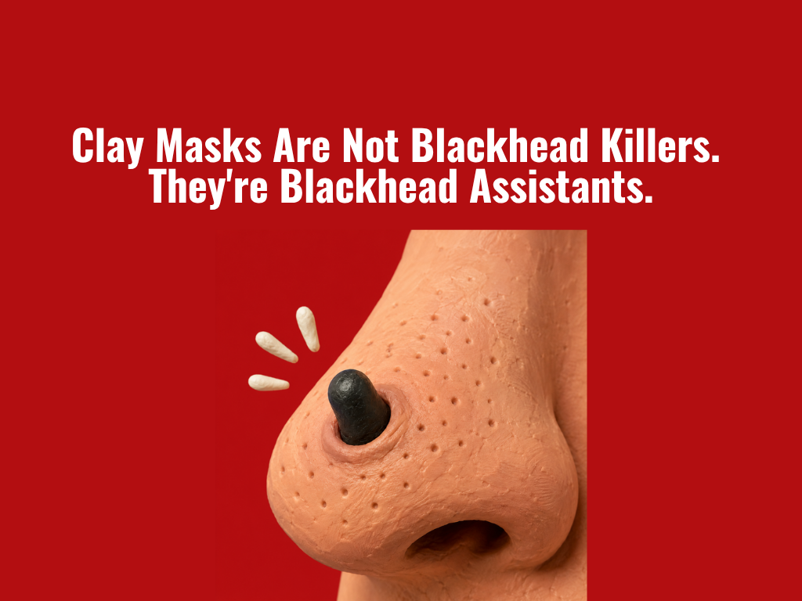

The beauty industry sells clay masks like tiny vacuum cleaners for your pores.
Apply. Wait. Rinse. Stare at your nose like it owes you money.
And yes, your skin may look cleaner. But here is the part brands conveniently whisper:
The 10-Second Truth
| What you think is happening | What is actually happening |
|---|---|
| "The mask pulled out my blackheads." | It absorbed surface oil and made the dots look less obvious. |
| "My pores are detoxed." | Your skin is less oily for the moment. That is not detox. |
| "The blackheads are gone." | Some surface buildup is reduced. Deeper plugs may still be sitting there. |
Blackheads Come in Two Main Forms
| Type | Where it sits | How stubborn | What helps |
|---|---|---|---|
| Surface oxidized oil | Near the top of the pore | Medium | Clay mask, gentle cleansing |
| Hardened oil plug | Stuck against the pore wall | High | Salicylic acid, careful extraction, patience |
The Grease Analogy
Think of blackhead buildup like pork fat.
When it is soft and oily, it can move. You can wipe it, absorb it, rinse some of it away.
When it hardens, it is not politely sliding out because you wore a mask for ten minutes. It is stuck to the wall like cold grease in a pan.
That is why clay masks can make the surface look better, but the deeper plug often stays behind.
What Clay Actually Does
| Ingredient category | What it is good at | What it is not built to do |
|---|---|---|
| Kaolin clay | Absorbing oil | Dissolving hardened plugs |
| Bentonite clay | Reducing greasy feel | Fixing recurring blackheads |
| Green, white, black clays | Temporary mattifying | Deep pore remodeling |
Beauty brands love changing the clay color and giving it a luxury personality. White clay. Green clay. Black clay. Different minerals, different textures, different aesthetics. But the main job is still the same: absorb oil.
Quick Visual: What Clay Masks Actually Handle
Not clinical scoring. Just the honest routine map.
Beauty Industry Translation
| Product claim | Translation |
|---|---|
| "Detoxes pores" | Absorbs oil. |
| "Draws out impurities" | Makes congestion look less visible. |
| "Instant pore clarity" | Temporary surface cleanup. |
| "Deep cleansing" | Usually not as deep as the ad wants you to believe. |
So What Should You Actually Do?
| Goal | Better tool | Please do not |
|---|---|---|
| Less oily, cleaner-looking skin | Clay mask once in a while | Use it daily and destroy your barrier |
| Loosen hardened buildup | Salicylic acid | Over-exfoliate because TikTok said so |
| Remove a stubborn plug | Sanitized extraction or professional facial | Attack your nose with dirty fingers |
| Prevent recurring congestion | Consistent routine | Expect one mask to change your pore biology |
The Part Nobody Puts on the Jar
Clay masks are not useless. They are just dramatically overmarketed.
They are blotting paper in a spa outfit.
They can make skin look cleaner. They can reduce shine. They can help with that congested surface feeling. But if the oil is hardened inside the pore, a mud mask is not doing surgery. It is handling the easy layer.
Final Verdict
Use the clay mask. Enjoy the clean feeling. Take the post-mask mirror moment. Just do not let a jar of mud convince you it solved a pore problem it was never built to solve. Clay masks are not blackhead killers. They are blackhead assistants with excellent branding.